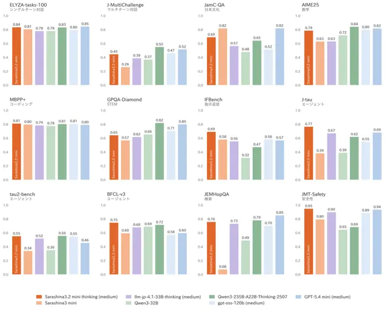

#日本国内
SB Intuitions、思考型の国産LLM「Sarashina3.2 mini thinking」を発表 エージェント能力と安全性で比較モデル中トップ評価

SB Intuitionsは2026年10月29日、フルスクラッチで開発した国産LLM「Sarashina3.2 mini thinking」を公開し、同社の「Sarashinaサービス」で利用可能なモデルに追加すると発表しました。前世代の指示モデルから、回答前に推論を行う「思考モデル」へと進化し、エージェント系ベンチマークや安全性評価で比較対象の中で最高スコアを記録しています。
記事で取り上げている点
- 指示モデルから思考モデルへ
- 学習手法の強化
- 想定ユースケース
- ベンチマーク結果
- 今後の展望
一次情報（出典） sbintuitions.co.jp